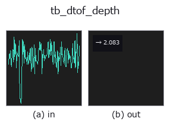

typed op• Data kinds: counts → feature
• Call: fullseye.apply(img, "tb_dtof_depth", a=0.5, b=0.5) (2-D model = एक image + दो scalar knobs a,b∈[0,1])

*Figure synthetic 128×128 input पर सच में चलाकर मिला output है। बाईं ओर input, दाईं ओर output। Point clouds ऊपर से देखे गए scatter के रूप में (brightness = z), 1-D series line के रूप में, volumes z दिशा में maximum-intensity projection के रूप में, videos बीच के frame के रूप में, complex images amplitude के रूप में, और जो return values चित्र नहीं बन सकते वे स्वयं values के रूप में दिखाए जाते हैं।*
Knob a को बदलकर (0.1 / 0.5 / 0.9, दूसरा knob default पर):
▸ tb_dtof_depth: knob a को बदलने का figure (docs site)
*Knob b output नहीं बदलता (मापा गया: 0.1 / 0.5 / 0.9 पर एक जैसा)।*
Stages (पहले आने वाले ops → यह op, बाएँ से क्रम में):
▸ tb_dtof_depth: stages का figure (docs site)
photon arrival-time histogram से दूरी: d = c*t/2।
> नीचे का विस्तृत विवरण मूल text में है — सारांश और headings का अनुवाद हो चुका है।
Direct time-of-flight. The light travels to the target and back, so the one-way distance is half the round-trip time times the speed of light. *bin_ps* is the width of one time bin (a 100 ps bin is 1.50 cm of depth).
Four estimators, from crudest to sharpest:
• "peak" — the centre of the fullest bin. Quantised to the bin grid; the error is uniform in +-half a bin (+-0.75 cm at 100 ps).
• "centroid" — the first moment of the whole histogram. Exact for a symmetric pulse *with no background*, and badly biased toward the middle of the window with one — pass subtract_background=True.
• "parabolic" — a parabola through the peak bin and its two neighbours. Sub-bin, cheap, and biased for a Gaussian pulse.
• "gaussian" — the same parabola fitted to the log of those three samples, which is the exact vertex for a Gaussian pulse.
Measured on a noiseless simulated return at 2.4371 m (256 bins x 100 ps, 500 ps IRF), absolute error: peak 1.29 mm, centroid 4.4e-16 m, parabolic 0.067 mm, gaussian 9.4e-9 m — three orders of magnitude between the crudest and the sharpest.
With Poisson noise (200 signal + 200 ambient photons, seed 0) the same four give 13.7 mm, 146.5 mm (with subtract_background=True), 8.5 mm and 8.0 mm. Two honest readings of that: once shot noise dominates the sub-bin estimators buy about 1.6x, not three orders of magnitude, and the centroid collapses because a median-subtracted ambient floor still leaves noise across the whole window that drags the first moment toward the centre. Use "gaussian" or "parabolic" on noisy data; use "centroid" only when the background is genuinely gone.
*offset_ps* is a system delay to remove: t_flight = t_measured - offset_ps, so a positive offset makes the answer *closer*. Returns the distance in metres as a float.
Raises ValueError: negative, non-finite, non-1-D or all-zero *hist*, a non-positive *bin_ps*, an unknown *mode*, a non-finite *offset_ps*, a flat histogram in a peak-based mode (argmax would silently pick bin 0 and report the first bin's depth), a peak in the first or last bin with a sub-bin *mode* (there is no neighbour to fit to — use "peak"), a degenerate three-sample fit, and — instead of returning a negative distance — an *offset_ps* larger than the measured arrival time.
Typed bridge of the photon op dtof_depth into the 2-D evolution registry: the same implementation, called under the op(v, a, b) convention. a drives bin_ps (default 100); b is unused.
• Sample data catalog (DL URL / license) — 2-D के लिए skimage.data (BSD/public) + synthetic, 3-D के लिए real data sources (Stanford/PDS आदि) के DL URL।
• Operators का स्रोत और संदर्भ — इस op family के मूल research/methods के स्रोत।
नीचे का program सच में चलता है, यह जाँचा गया है (figure वाला ही input)। Studio की help में यह block buttons बन जाता है, जिनसे इसे वहीं load करके चलाया जा सकता है।
img_to_counts 0.50 0.50 tb_dtof_depth 0.50 0.50
▸ यह pipeline load करें · Load करके चलाएँ
नीचे के उदाहरण मूल ledger op dtof_depth को call करते हैं। यह bridge op वही implementation है, बस fn(v, a, b) convention के अनुसार ढाला गया है, इसलिए व्यवहार वैसा ही लागू होता है (केवल call का रूप अलग है)।
• photon_timeresolved — py -3.11 examples/photon_timeresolved.py
• poc_dtof_ranging — py -3.11 examples/poc_dtof_ranging.py
feature को input के रूप में लेते हैं)typed)tb_points_to_voxel · tb_estimate_point_normals · tb_iss_keypoints · tb_project_points · tb_render_point_depth · tb_statistical_outlier_removal · tb_radius_outlier_removal · tb_voxel_grid_downsample
*Provenance: ops.py — 2D operator registry. यह per-op note tools/opdocs.py md से अपने-आप generate होता है (हाथ से edit न करें)।*
© 2026 Kazufumi Furuse — Fullseye operator documentation. Licensed under Apache-2.0.